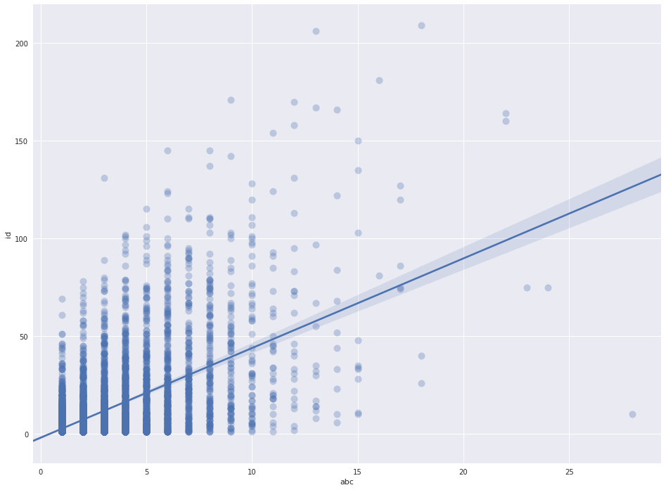

# All the library imports
import numpy as np
import seaborn as sns
import matplotlib.pyplot as plt
import pandas as pd
import re
import itertools
# All the settings
pd.set_option('display.max_colwidth', -1)
import warnings
warnings.filterwarnings('ignore')
# Get the tune, recordjing and alias data into dataframes
tuneData = pd.read_json('/data/tunes.json')
print(type(tuneData))
aliasData = pd.read_json('/data/aliases.json')
print(type(aliasData))
recordData = pd.read_json('/data/recordings.json')
print(type(recordData))
<class 'pandas.core.frame.DataFrame'>
<class 'pandas.core.frame.DataFrame'>
<class 'pandas.core.frame.DataFrame'>
# Print out some rows
tuneData.head(3)
| abc | date | meter | mode | name | setting | tune | type | username | |
|---|---|---|---|---|---|---|---|---|---|
| 0 | dBB B2 A BAG|dBB Bcd efg|dBB B2 A BAG| eAA dBG A2 e| \r\ndBB B2 A BAG|dBB Bcd efg|dBB B2 A BAG| eAA dBG A2 A|\r\nBAB g2 e fed|BAB e/f/g e f2 A|BAB g2 e fed|eAA ABd e2 A|\r\nBAB g2 e fed|BAB e/f/g e f2 f|def gfe fed |eAA ABd efg| | 2012-05-16 23:49:26 | 9/8 | Gmajor | 'G Iomain Nan Gamhna | 11931 | 11931 | slip jig | iliketurtles |
| 1 | |: G>A B>G c>A B>G | E<E A>G F<D D2 | G>A B>G c>A B>G | E>A F>D G2 G2 :|\r\n|: D>D D>D (3DDD D>D | d>B A>B G<E E2 | D>D D>D (3DDD D>D | d>B A>B G2 G2 :| | 2016-03-31 07:34:45 | 4/4 | Gmajor | 'S Ann An Ìle | 28560 | 15326 | strathspey | Daniel Quayle |
| 2 | uD2|:{F}v[G,2G2]uB>ud c>A B>G|{D}E2 uA>uG F<D D>F|{F}[G,2G2]uB>ud c>A B>G|[1E>A F<D {F}G2 uG>uD:|[2E>A F<D {F}G2 (G>E)|\r\nD>D D>B, D>D D>(B|d>B) A>B G<E E>G|D>D D>B, D>D D>(B|[1d>B) A<B {F}G2 G>E:|[2d>B) A<B {F}G2|| | 2016-04-03 01:15:08 | 4/4 | Gmajor | 'S Ann An Ìle | 28582 | 15326 | strathspey | DonaldK |
recordData.head(3)
| artist | field10 | field11 | field8 | field9 | id | number | recording | track | tune | tune_id | |
|---|---|---|---|---|---|---|---|---|---|---|---|
| 0 | 1651 | NaN | NaN | NaN | NaN | 3720 | 1 | Cast A Bell | 1 | Kettledrum | 14408 |
| 1 | 1651 | NaN | NaN | NaN | NaN | 3720 | 1 | Cast A Bell | 2 | Maiden Lane | 13727 |
| 2 | 1651 | NaN | NaN | NaN | NaN | 3720 | 2 | Cast A Bell | 2 | Chirping Of The Nightingale | NULL |
numSettings = tuneData.groupby(['name', 'tune'])['abc'].count().reset_index().rename(index=str, columns={"tune": "tune_id"})
numRecordings = recordData.groupby(['tune_id'])['id'].count().reset_index()
numRecordings = numRecordings[numRecordings.tune_id.apply(lambda x: x.isnumeric())]
numRecordings[['tune_id']] = numRecordings[['tune_id']].astype(int)
joinData = numSettings.join(numRecordings.set_index('tune_id'), on='tune_id').dropna(how='any')
import seaborn as sns; sns.set(color_codes=True)
import matplotlib.pyplot as plt
sns.set(rc={"figure.figsize": (16, 12)})
ax = sns.regplot(x="abc", y="id", data=joinData, scatter_kws={"s": 100, "alpha": 0.3})

jigdf = (tuneData.loc[tuneData['type']=='reel'])
notes = ['G,', 'A,', 'B,', 'C', 'D', 'E', 'F', 'G', 'A', 'B', 'c', 'd', 'e', 'f', 'g', 'a', 'b', 'c\'', 'd\'']
rep = dict();
for n in notes:
rep[n+"2"] = n * 2
rep[n+"3"] = n * 3
rep[n+"4"] = n * 4
rep = dict((re.escape(k), v) for k, v in rep.items())
pattern = re.compile("|".join(rep.keys()))
for index, row in jigdf.iterrows():
row[0] = re.sub('(?:[{\"]{1,2}\w*[}\"]{1,2})', '', row[0])
row[0] = re.sub('[^a-gA-G,:|\']', '', pattern.sub(lambda m: rep[re.escape(m.group(0))], row[0]))
jigdf.set_value(index, 'abc1', row[0])
pattern1 = re.compile(r'[|:]{0,2}(?:[a-gA-G][,\'\s]{0,2}){3}(?:[a-gA-G][,\'\s]{0,2}){3}[:|]{0,2}')
for index, row in jigdf.iterrows():
basic = ''
i = 0
for match in re.findall(pattern1, row[9]) :
basic = basic + re.sub('[^a-gA-G,\']', '', match) + "|"
i = i + 1
if i >= 8:
break
jigdf.loc[index, 'basic'] = basic
sample = jigdf[jigdf['name'].str.contains("Kesh, The")&jigdf['mode'].str.contains("Gmajor")]
sample.count()
abc 8
date 8
meter 8
mode 8
name 8
setting 8
tune 8
type 8
username 8
abc1 8
basic 8
dtype: int64
df1 = sample['basic'].apply(lambda x: pd.Series(list(x)))
num = dict();
i = 0
for n in notes:
num[n] = i
i = i + 1
num = dict((re.escape(k), v) for k, v in num.items())
pattern_num = re.compile("|".join(num.keys()))
df1.replace(num, inplace=True)
print(df1)
0 1 2 3 4 5 6 7 8 9 ... 46 47 48 49 50 51 52 53 \
14690 7 7 7 7 8 9 | 8 8 8 ... 11 11 | 9 8 6 7 7
14692 7 7 7 7 8 9 | 8 8 8 ... 11 9 | 9 9 9 11 9
14696 7 7 4 7 8 9 | 8 8 7 ... 11 9 | 9 9 8 7 7
14697 7 7 7 7 7 8 | 8 8 8 ... 14 11 | 8 7 6 7 7
14698 7 7 7 7 8 9 | 8 8 8 ... 11 9 | 10 8 6 7 7
14699 9 7 7 11 7 7 | 12 14 12 ... 14 15 | 16 14 14 14 14
14700 7 7 7 7 8 9 | 8 9 8 ... 11 9 | 9 9 9 11 9
14701 7 7 7 7 8 9 | 8 8 8 ... 11 9 | 8 7 6 7 7
54 55
14690 7 |
14692 10 |
14696 7 |
14697 8 |
14698 7 |
14699 11 |
14700 11 |
14701 4 |
[8 rows x 56 columns]
df2 = df1.select_dtypes(['number'])
df2
| 0 | 1 | 2 | 3 | 4 | 5 | 7 | 8 | 9 | 10 | ... | 39 | 42 | 43 | 44 | 45 | 50 | 52 | 56 | 57 | 60 | |
|---|---|---|---|---|---|---|---|---|---|---|---|---|---|---|---|---|---|---|---|---|---|
| 4456 | 10 | 10 | 10 | 9 | 8 | 7 | 8 | 7 | 5 | 4 | ... | 7 | 7 | 5 | 4 | 9 | 8 | 8 | 4.0 | 5.0 | 9.0 |
| 4457 | 10 | 9 | 8 | 15 | 13 | 15 | 16 | 15 | 14 | 12 | ... | 11 | 7 | 9 | 11 | 14 | 8 | 8 | NaN | NaN | NaN |
| 4459 | 10 | 9 | 8 | 9 | 8 | 7 | 8 | 7 | 5 | 4 | ... | 9 | 8 | 8 | 5 | 5 | 9 | 8 | NaN | NaN | NaN |
| 4460 | 10 | 10 | 8 | 9 | 8 | 7 | 8 | 7 | 5 | 4 | ... | 9 | 8 | 7 | 8 | 5 | 9 | 15 | NaN | NaN | NaN |
| 4461 | 8 | 7 | 5 | 4 | 9 | 7 | 8 | 7 | 8 | 5 | ... | 11 | 11 | 12 | 14 | 15 | 10 | 10 | 11.0 | 12.0 | 16.0 |
| 4462 | 10 | 10 | 10 | 9 | 8 | 7 | 8 | 7 | 5 | 4 | ... | 15 | 15 | 13 | 14 | 12 | 8 | 8 | 6.0 | 7.0 | 11.0 |
| 4464 | 10 | 9 | 8 | 9 | 8 | 7 | 8 | 7 | 5 | 4 | ... | 11 | 7 | 5 | 4 | 9 | 8 | 8 | 5.0 | 3.0 | 10.0 |
| 4466 | 10 | 9 | 8 | 9 | 8 | 7 | 8 | 7 | 5 | 4 | ... | 7 | 7 | 5 | 4 | 9 | 8 | 8 | 5.0 | 7.0 | 4.0 |
| 12959 | 8 | 8 | 8 | 9 | 8 | 7 | 8 | 8 | 8 | 15 | ... | 15 | 14 | 13 | 12 | 12 | 15 | 15 | NaN | NaN | NaN |
9 rows × 31 columns
df3=df2.apply(pd.Series.value_counts).fillna(0)
sns.set(rc={"figure.figsize": (18, 3)})
ax = sns.heatmap(df3, linewidths=1, cmap="Blues", vmin=-1)

df3
| 0 | 1 | 2 | 3 | 4 | 5 | 7 | 8 | 9 | 10 | ... | 44 | 45 | 46 | 47 | 49 | 50 | 51 | 52 | 53 | 54 | |
|---|---|---|---|---|---|---|---|---|---|---|---|---|---|---|---|---|---|---|---|---|---|
| 4 | 7.0 | 2.0 | 7.0 | 7.0 | 1.0 | 0.0 | 0.0 | 0.0 | 0.0 | 0.0 | ... | 0.0 | 0.0 | 0.0 | 0.0 | 0.0 | 0.0 | 7.0 | 7.0 | 7.0 | 7.0 |
| 5 | 0.0 | 5.0 | 0.0 | 0.0 | 6.0 | 1.0 | 0.0 | 0.0 | 0.0 | 0.0 | ... | 0.0 | 0.0 | 0.0 | 7.0 | 0.0 | 7.0 | 0.0 | 0.0 | 0.0 | 0.0 |
| 7 | 0.0 | 0.0 | 0.0 | 0.0 | 0.0 | 6.0 | 0.0 | 0.0 | 2.0 | 0.0 | ... | 7.0 | 0.0 | 7.0 | 0.0 | 7.0 | 0.0 | 0.0 | 0.0 | 0.0 | 0.0 |
| 8 | 0.0 | 0.0 | 0.0 | 0.0 | 0.0 | 0.0 | 7.0 | 7.0 | 5.0 | 7.0 | ... | 0.0 | 7.0 | 0.0 | 0.0 | 0.0 | 0.0 | 0.0 | 0.0 | 0.0 | 0.0 |
| 9 | 0.0 | 0.0 | 0.0 | 0.0 | 0.0 | 0.0 | 0.0 | 0.0 | 0.0 | 0.0 | ... | 0.0 | 0.0 | 0.0 | 0.0 | 0.0 | 0.0 | 0.0 | 0.0 | 0.0 | 0.0 |
| 10 | 0.0 | 0.0 | 0.0 | 0.0 | 0.0 | 0.0 | 0.0 | 0.0 | 0.0 | 0.0 | ... | 0.0 | 0.0 | 0.0 | 0.0 | 0.0 | 0.0 | 0.0 | 0.0 | 0.0 | 0.0 |
6 rows × 48 columns
df1 = jigdf['basic'].apply(lambda x: pd.Series(list(x)))
df1.replace(num, inplace=True)
df2 = df1.select_dtypes(['number'])
df3=df2.apply(pd.Series.value_counts).fillna(0)